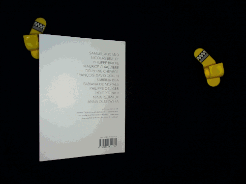
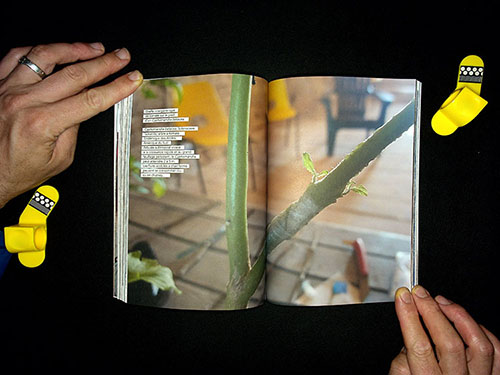
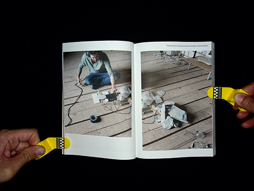
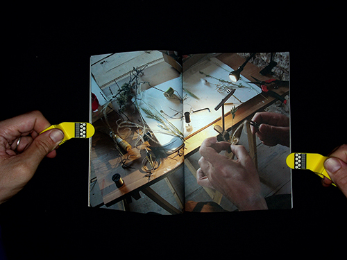
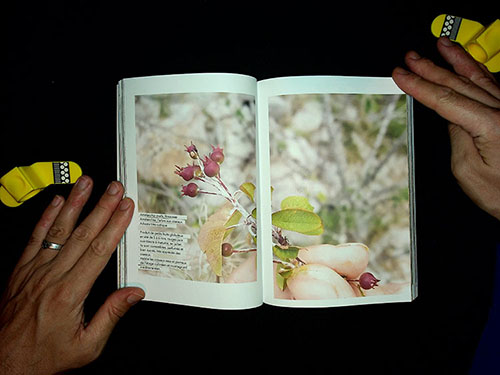
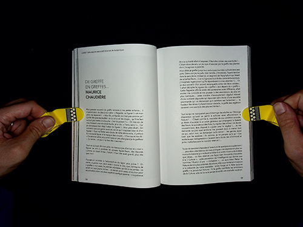
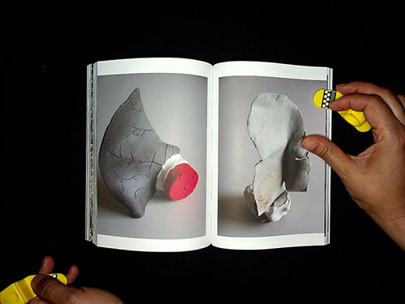

Quatrième de couverture, édition L'Acte de la Greffe, la transitivité, du LAAB en collectif augmenté, 300 exemplaires accompagné de huits cartes postales, 2021.
L'ACTE DE LA GREFFE, la transitivité.
Diffusion de l'édition et multiples
Edition de recherche du LAAB en collectif augmenté avec les propositions de Samuel Aligand, Nicolas Bralet, Philippe Brière, Delphine Chevrot, François-David Collin, Sabrina Issa, Fabiana De Moraes, Philippe Obligé, Lydie Regnier, Nina Reumaux, Anna Olszewska et l’aimable contribution de Maurice Chaudière.
L'édition, L'Acte de la greffe a été réalisée suite à une résidence de recherche et de création du LAAB au Domaine des Boissets en Lozère et sur les six mois d'ouverture de l'espace au public. C'est autour d'une recherche collective que théoriciens, artistes, scientifiques et/ou ingénieurs ont élaborés leur propositions ayant comme point de départ l'acte de la greffe. Le collectif du LAAB ainsi - augmenté - a souhaiter exposer ses créations en train de se faire afin d'échanger avec les publics, dans une dynamique de recherche.
Cʼest ce projet expérimenté et envisager au fils temps, que nous rendons visible à travers une édition. Cette édition, conçue comme un supplément dʼespace, transmet et redéploye la diversité de lʼensemble des propositions, éphémères ou appelées à vivre sur le site.

Aperçu de l'édition, L'Acte de la Greffe, la transitivité, du LAAB en collectif augmenté, 300 exemplaires accompagné de huits cartes postales, 2021.

Vue d'une greffe intergénérique d'un pied de tomate sur un 'arbre à tomate', un Cyphomandra betacea, à l'occasion d'un atelier mené par Philippe Obliger pendant la résidence de recherche du LAAB au Domaine des Boissets en 2020. Image © Sabrina Issa, publié dans l'édition, L'Acte de la Greffe, la transitivité, du LAAB en collectif augmenté, 300 exemplaires accompagné de huits cartes postales, 2021.

Prise de son réalisée sur des pierres calcaires du Causse, de Nicolas Bralet. Image © Sabrina Issa, édition L'Acte de la Greffe, la transitivité, du LAAB en collectif augmenté, 300 exemplaires accompagné de huits cartes postales, 2021.

Vue d'atelier, Appât, mouches, de Nicolas Bralet, pièces réalisées à partir de végétaux, de poils et de plumes trouvées sur le Causse. Exemplaires uniques. Image © Sabrina Issa, édition L'Acte de la Greffe, la transitivité, du LAAB en collectif augmenté, 300 exemplaires accompagné de huits cartes postales, 2021.

Porte-greffe, Prunus Mahaleb, photographie numérique de Sabrina Issa, repérage des arbres pouvant accueillir des greffes sur le pourtour de la résidence de recherche du LAAB au Domaine des Boissets, en 2020. Edition, L'Acte de la Greffe, la transitivité, du LAAB en collectif augmenté, 300 exemplaires accompagné de huits cartes postales, 2021.

De greffe, en greffes..., de Maurice Chaudière. Publié dans l'édition, L'Acte de la Greffe, la transitivité, du LAAB en collectif augmenté, 300 exemplaires accompagné de huits cartes postales, 2021.

Pièces issues de la série Hydres de Lydie Regnier et Samuel Aligand, céramique, polymère, bois, minéraux, dimensions variables, 2020. Image © Sabrina Issa, publié dans l'édition, L'Acte de la Greffe, la transitivité, du LAAB en collectif augmenté, 300 exemplaires accompagné de huits cartes postales, 2021.